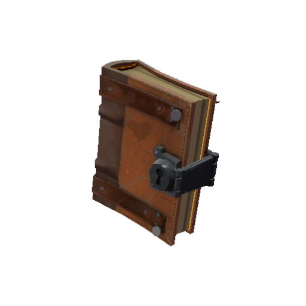
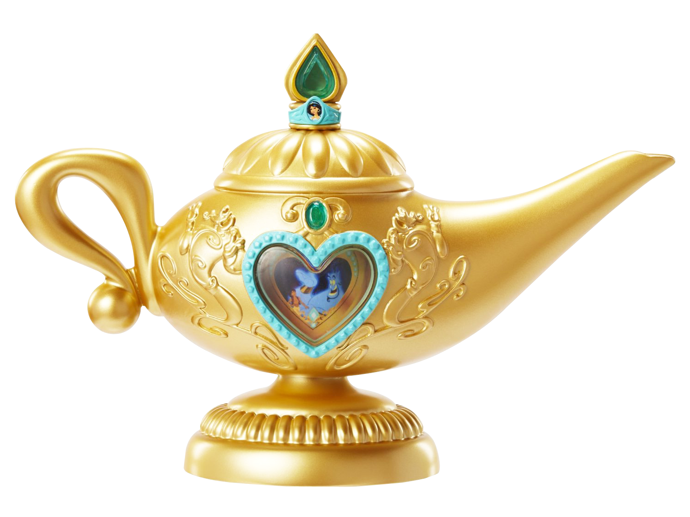
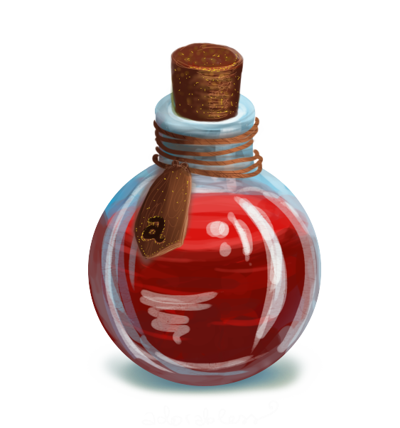
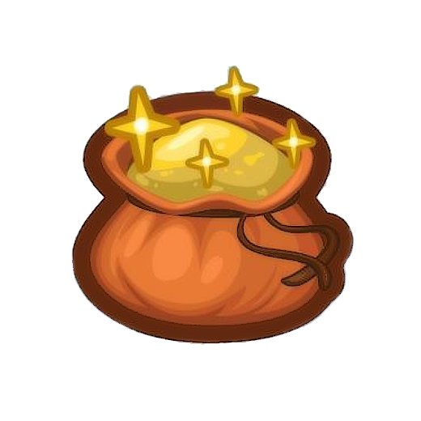

Галерея

Это мифический артефакт, который содержит в себе заклинания и магические формулы. Считается, что она может исполнять желания, предсказывать будущее и помогать в различных ситуациях. Эта книга используется ведьмами и магами для проведения ритуалов и обрядов. Заклинания в ней написаны на древнем языке, который понятен только избранным.

По легенде, если потереть эту лампу, появится Джинн, готовый исполнить три желания того, кто его вызвал. Лампа Джина используется для исполнения желаний в сказках и преданиях разных культур. Однако следует помнить, что в обмен на свои услуги Джинн может потребовать плату или поставить сложные условия, поэтому использовать лампу нужно с осторожностью.

Это мифический напиток, который обладает магическими свойствами. Считается, что волшебное зелье может исцелять болезни, даровать молодость и красоту, исполнять желания или даже воскрешать мёртвых. В зависимости от рецепта и цели использования, волшебное зелье готовится из различных ингредиентов, таких как травы, минералы, жидкости и порошки.

Считается, что волшебная палочка может исполнять желания, превращать одни предметы в другие и даже воскрешать их. В разных культурах волшебные палочки используются для проведения ритуалов, а также в качестве инструмента волшебников и ведьм. По легенде, истинная сила волшебной палочки зависит от её владельца и его намерений.

В волшебном мешочке можно хранить различные предметы, которые будут недоступны для других людей, а также переносить их с места на место. В сказках и преданиях волшебный мешочек используется для хранения ценных вещей, таких как золото, драгоценные камни или волшебные артефакты. По легенде, чтобы воспользоваться содержимым мешочка, нужно произнести особое заклинание.